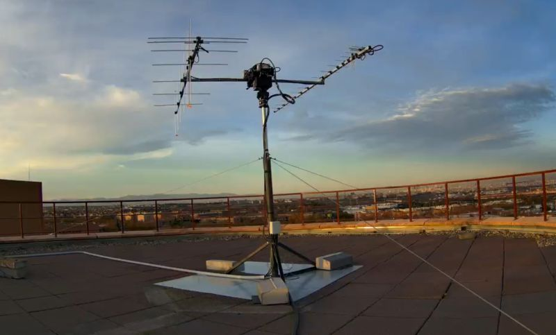

ESTACIÓN TERRENA
Diseño y construcción de una estación de seguimiento automatizada para satélites meteorológicos (NOAA/Meteor) y cubestats universitarios en bandas VHF/UHF.
Nuestro objetivo principal es establecer un enlace estable con satélites de órbita baja (LEO). Buscamos decodificar imágenes meteorológicas en tiempo real y recibir telemetría de otros equipos universitarios, sirviendo como nodo en la red global de estaciones terrestres (SatNOGS).
- Antenas: Diseño Yagi-Uda cruzada para polarización circular.
- Rotores: Sistema de seguimiento Azimut/Elevación controlado por Arduino.
- SDR: Procesado de señal mediante RTL-SDR y GNU Radio.